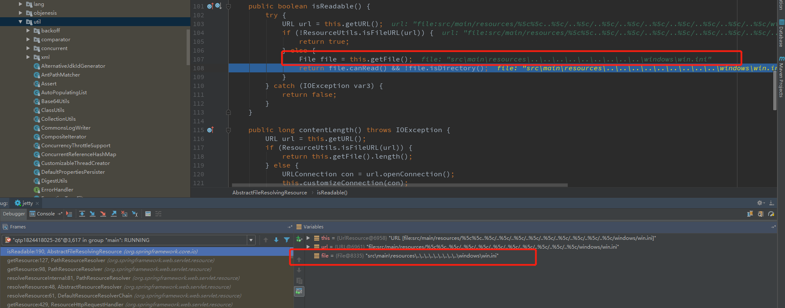

漏洞简介
2018年04月05日，Pivotal公布了Spring MVC存在一个目录穿越漏洞(CVE-2018-1271)。Spring Framework版本5.0到5.0.4,4.3到4.3.14以及较旧的不受支持的版本允许应用程序配置Spring MVC以提供静态资源（例如CSS，JS，图像）。当Spring MVC的静态资源存放在Windows系统上时，攻击可以通过构造特殊URL导致目录遍历漏洞。
漏洞影响
- Spring Framework 5.0 to 5.0.4.
- Spring Framework 4.3 to 4.3.14
- 已不支持的旧版本仍然受影响
漏洞利用条件
- Server运行于Windows系统上
- 要使用file协议打开资源文件目录
漏洞复现
复现环境
- 操作系统Windows
- web代码 spring-mvc-showcase
- 中间件jetty
环境搭建
下载 spring-mvc-showcase
1
git clone https://github.com/spring-projects/spring-mvc-showcase.git
修改
pom.xml，使用Spring Framework 5.0.0。修改 Spring MVC 静态资源配置，可参考官方文档
通过官方文档可知有两种方式配置，可自行选择配置。此处通过重写
WebMvcConfigurer中的addResourceHandlers方法来添加新的资源文件路径。在org.springframework.samples.mvc.config.WebMvcConfig添加以下代码即可，使用file://协议指定resources为静态文件目录。1
registry.addResourceHandler("/resources/**").addResourceLocations("file:./src/main/resources/","/resources/");
使用 jetty 启动项目
1
mvn jetty:run
至此复现环境搭建完毕。
复现过程及结果
访问以下链接
1 | http://localhost:8080/spring-mvc-showcase/resources/%255c%255c..%255c/..%255c/..%255c/..%255c/..%255c/..%255c/..%255c/..%255c/..%255c/windows/win.ini |
可以看到成功读取到win.ini的内容了。
漏洞分析
当外部要访问静态资源时，会调用org.springframework.web.servlet.resource.ResourceHttpRequestHandler:handleRequest来处理，在这里下断点调试。
跟进org.springframework.web.servlet.resource.ResourceHttpRequestHandler:getResource()。
在request中保存的路径是/spring-mvc-showcase/resources/%255c%255c..%255c/..%255c/..%255c/..%255c/..%255c/..%255c/..%255c/..%255c/..%255c/windows/win.ini。在request.getAttribute()函数取值时会进行 url decode操作，此时path的值为%5c%5c..%5c/..%5c/..%5c/..%5c/..%5c/..%5c/..%5c/..%5c/..%5c/windows/win.ini。接下来会对path进行两次校验，将path和path解码之后的值分别使用isInvalidPath函数检查。看下这个函数
当path包含有..的时候，会调用cleanPath函数对path处理。跟进
这个函数的作用是把包含..的这种相对路径转换成绝对路径。例如/foo/bar/../经过cleanPath处理后就会变成/foo/。
cleanPath的问题在于String[] pathArray = delimitedListToStringArray(pathToUse, "/");这个是允许空元素存在的，也就是说cleanPath会把//当成一个目录，而操作系统是不会把//当成一个目录的。借用一张Orange大佬的图。
继续回到流程上，上面说到会对path进行两次校验，第一次调用isInvalidPath，path的值是%5c%5c..%5c/..%5c/..%5c/..%5c/..%5c/..%5c/..%5c/..%5c/..%5c/windows/win.ini，因为path以/分割之后没有元素等于..，所以path经过cleanPath处理后的值不变，继续之后的判断，path里面也不包含../，所以最终返回false，也就是通过了校验。
第二次调用isInvalidPath(URLDecoder.decode(path, "UTF-8"))，此时参数值是\\..\/..\/..\/..\/..\/..\/..\/..\/..\/windows/win.ini，经过cleanPath处理后的值是//windows/win.ini，之后继续判断，path里面也不包含../，最终返回false，也通过了校验。
通过两次校验之后，继续向下执行。获取一个Resource对象
path的值还是之前，getLocations()获取到的就是之前在配置文件中配置的路径file:./src/main/resources/，继续跟进
跟进ResourceResolver类的resolveResource
跟进PathResourceResolver的resolveResourceInternal
进入到org.springframework.web.servlet.resource.PathResourceResolver的getResource()
此时的resourcePath就是之前的path，location就是之前getLocations()获取到的值。继续跟进this.getResource
调用location.createRelativ拼接得到文件的绝对路径，返回一个UrlResource对象

返回到到getResource函数

此时，resource是一个UrlResource对象，可以看到值是file:src/main/resources/%5c%5c..%5c/..%5c/..%5c/..%5c/..%5c/..%5c/..%5c/..%5c/..%5c/windows/win.ini，之后调用exists()方法检查该文件是否存在，调用isReadable()方法检测该文件是否可读。进去exists()方法
这里会调用isFileURL对url进行判断，是否以file://协议来读取文件，这也是为什么配置静态目录的时候要使用file://协议。
通过判断之后，会调用this.getFile()来获取这个文件对象，这个方法在org.springframework.util.ResourceUtils这个方法类里面，跟进
这里对是否为file://协议又判断了一次，之后进行了一步最重要的操作new File(toURI(resourceUrl).getSchemeSpecificPart());，将resourceUrl转换为URL对象，最后调用URI类的getSchemeSpecificPart()获取到文件路径，而在getSchemeSpecificPart()里面是有一次decode操作的，也就是在这里把%5c解码成了\，跟进
最后返回到exists()，最终返回true，即文件存在
之后调用isReadable()方法检测该文件是否可读的时候，同样会调用这个getFile，最终返回true，即文件可读。

至此，对于resource的判断都结束了。返回到org.springframework.web.servlet.resource.ResourceHttpRequestHandler:handleRequest()，获取到通过校验resource的之后，就开始准备response的内容了，包含获取文件的类型(用于response的Content-type)，文件的大小(用于response的Content-length)等等，最后调用this.resourceHttpMessageConverter.write(resource, mediaType, outputMessage);获取文件的内容并返回给用户。
跟进write()
跟进writeInternal，之后再跳到writeContent
跟进resource.getInputSream()
可以看到，这里使用openConnection创建一个URLConnection实例，也是在openConnection方法内，会自动decode，把%5c解码成\，然后返回文件的InputStream对象，最终读取内容返回给用户。
注意事项
这个漏洞是可以在 Tomcat 下触发的，因为payload的双URL编码的。
在Spring Framework 大于5.0.1的版本(我的测试环境5.0.4)，双URL编码payload是不行的，单次URL编码的payload的却是可以的，这种情况下该漏洞就无法在Tomcat下触发了，因为在默认情况下Tomcat遇到包含%2f(/) %5c(\)的URL直接http 400，在 jetty 下是可以触发的。
至于为什么双URL编码不行，是因为
org.springframework.web.servlet.resource.PathResourceResolver的getResource()多了一个encode操作。如果是双URL编码payload的进来，在获取
path的时候解码一次，经过一次isInvalidPath判断，然后进入到PathResourceResolver的getResource()，也就是上图的位置，这里又会重新编码一次，又回到了双编码的情况了。最后在文件判断是否存在exists()方法的时候，getSchemeSpecificPart()只能解码一次，之后是无法读取到文件的，也就是文件不存在。所以这里要使用单次编码才行。
补丁分析
看官方的补丁，是在ResourceHttpRequestHandler的getResource()里面把processPath重写了
在进入isInvalidPath之前调用processPath函数对path处理，替换反斜线为斜线，删掉多余斜线，从而导致在isInvalidPath里面校验不通过。如果使用双编码方式的话，会经过isInvalidEncodedPath，里面会先对path解码，然后调用processPath处理，最后经过isInvalidPath，同样无法通过检查。
漏洞修复
- Spring Framework 5.*（5.0到5.0.4）版本，建议更新到5.0.5版本
- Spring Framework 4.3.*（4.3到4.3.14）版本，建议更新到4.3.15版本
- 不再受支持的旧版本，建议更新到4.3.15版本或5.0.5版本